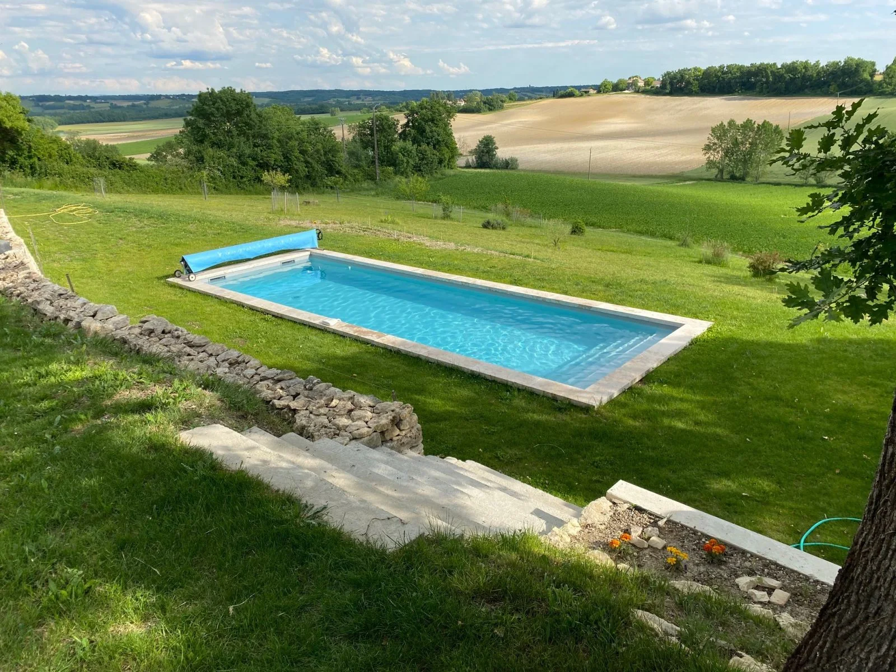

Du plan au premier plongeon.
Delpech Piscines indique être spécialisé dans la construction de piscines sur mesure en maçonnerie traditionnelle, avec un accompagnement du projet jusqu’à la prise en main du bassin.
Des étapes lisibles, coordonnées autour d’un même projet.
La structure historique du site Delpech décrit un parcours allant de l’implantation jusqu’à la réception des travaux et l’explication du fonctionnement du bassin.
Implantation & préparation
Validation de la position du bassin, prise en compte du terrain, des accès, des vues et de l’organisation future des abords.
Terrassement & structure
Le chantier prend forme avec le terrassement puis la réalisation de la structure en maçonnerie traditionnelle.
Hydraulique & local technique
Skimmers, refoulements, bonde, pompe, filtre et réseaux sont organisés pour assurer la circulation et le traitement de l’eau.
Étanchéité & équipements
Revêtement, traitement de l’eau, chauffage, éclairage et sécurité sont mis en place selon la configuration retenue.
Mise en eau & prise en main
La réception du chantier s’accompagne de l’explication du fonctionnement et des gestes nécessaires à l’utilisation du bassin.
Montrez-nous votre terrain.
Quelques photos, la commune, les vues principales et le type de bassin imaginé permettent déjà d’ouvrir la discussion.
Demander un devis